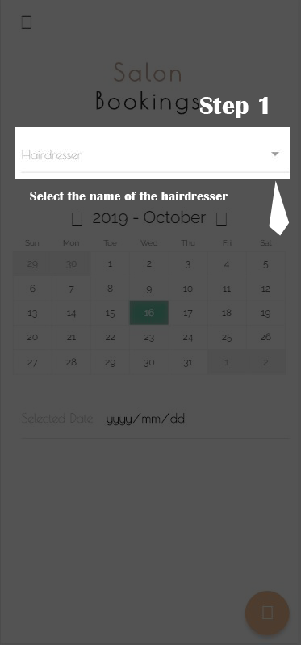

<ion-content fullscreen>

    <ion-header no-border>
        <ion-toolbar >
            <ion-buttons  >
            <button style="color: white;background-color: transparent;" (click)="nextState()" [hidden] ="hidden">NEXT</button>
            </ion-buttons>
    
            <ion-buttons end  style="color: white">
           <button (click)="goToHome()" style="color: white;background-color: transparent;" [hidden] ="hidden" >SKIP</button>
            </ion-buttons>
        </ion-toolbar>
      </ion-header>

  <ion-slides pager="true" #slides (ionSlideDidChange)="slideState()" (ionSlideTap) ="nextState()">

    <ion-slide>
      
    </ion-slide>
  
    <ion-slide>
      
    </ion-slide>
    
    <ion-slide>
        <button ion-button color="light" id="gotit" (click)="goToHome()"><b>GOT IT <ion-icon name = "md-thumbs-up"></ion-icon></b></button>
            
           
    </ion-slide>
  
  </ion-slides>
</ion-content>
